NL | FR | EN Welcome to the OpenCPN Help pages
Return to topWhat is OpenCPN?
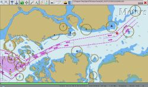OpenCPN is a simple, concise chart plotter/navigator. It is designed to be used continuously at the ships helm station while underway. It will allow the operator to easily track their position on accurate chart images. Additionally, OpenCPN can display tide and current predictions. If you have a suitable AIS receiver it will display AIS information transmitted by AIS equipped vessels.
OpenCPN is a complete and fully functioning program. It is licensed to you under the GNU public license. This and future upgrades will always be free to download without any gotchas. The source code is available and if you have programming skills, modifications can be made to suit your particular situation.
See the GNU Public License for details.
This help file covers features up to and including version 1.3.6.
Return to topWhy should I use it instead of a commercial product?
OpenCPN has compelling reasons for its use.
- It is Open Source software, meaning, among other things, that it is FREE TO DOWNLOAD and use. Escape the commercial paid upgrade treadmill!
- It is "concise," meaning that the feature set is optimized for daily use, and excess features (aka "bloatware") are not present. The application is thus smaller and faster, running acceptably on as little as a 300 Mhz Pentium-II Windows-98 computer. Especially, it starts up and shuts down quickly.
- OpenCPN conforms more closely than many other consumer ECS's to international IMO specification S52 for ENC display. This is a worldwide standard, and promotes portability among watch-keeping officers on all ECDIS equipped ships and boats.
- Based on extensive human factors engineering, the main objective of S52 is to reduce clutter and extraneous information. For example, the colors are very carefully selected to produce the most effective viewing under real bridge conditions. Thus, in high stress conditions at sea (crossings, low viz, etc.), the proper situational awareness is maintained.
Return to topIs it reliable for day to day use?
OpenCPN is currently in a Beta release stage. Traditionally, this means that there may be a few bugs. However, for normal usage, it runs just fine.
On a personal note, openCPN has, for years, been the full-time everyday navigator aboard M/V Dyad, a trawler catamaran cruising from Newfoundland to the Bahamas.
Of course any prudent mariner will have navigation tools and paper charts for the areas they will be sailing. Nothing that is electric and sails in salt water is 100% reliable. Low tech backups work even when wet.
Return to topI'm not techno savvy, is this easy to use?
Some familiarity with competitive products is assumed. There is precious little documentation available on OpenCPN yet. Usage is fairly intuitive.
Return to topHow accurate is it?
OpenCPN's accuracy is dependent upon the accuracy of your GPS and the underlying chart database. As for all such programs, OpenCPN does not remove from the operator the responsibility to
LOOK OUT THE WINDOW!
With that said, OpenCPN will plot the boat position to within about 100 ft of its true position most of the time. OpenCPN will warn the user if the chart data accuracy does not allow for safe navigation.
Return to topDo I need GPS?
OpenCPN is optimized as an underway tool, so GPS data is necessary to allow boat position plotting. However, OpenCPN can be used without GPS for planning purposes, such as route and waypoint entry and time/distance calculations.
Return to topWhere can I find the charts I need?
OpenCPN comes with a few sample charts. These are included to provide instant opportunity to experience the potential of the program. S57 vector charts (the equivalent to CM93/3) are now available for free download from NOAA. Find all the charts you need, both raster (RNC) and ENC's, for your region through NOOA OCS Website: http://www.nauticalcharts.noaa.gov/staff/charts.htm
Return to topIf I need help, where can I find it?
I check the SCCA Bulletin board at http://ssca.org/phpBB3/viewforum.php?f=12
I also check in at the Cruiser Forum at:
http://www.cruisersforum.com/forums/f121/opencpn-13653-8.html
Return to topHow can I help?
If you'd like to develop enhancements to OpenCPN, check out the project on SourceForge: http://sourceforge.net/projects/opencpn/
Current items of interest are:
- Testing: Use it, cruise it, abuse it, take notes. Your feedback is appreciated.
- Icons, color palettes, etc: Graphic designers invited.
We welcome all comments and ideas, and especially look forward to your bug reports. I can be reached by email at: bdbcat@yahoo.com
Getting Started with OpenCPN
The OpenCPN Interface
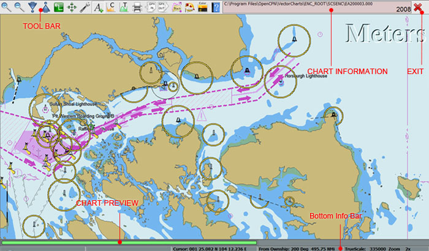
We assume here that you have downloaded the proper file for your operating system and have installed it whilst keeping all the default folders.
The file structures are:
- Linux machines - usr/bin/opencpn.
- Windows - C:/Program Files/OpenCPN/
- Macs - {to be supplied)
When your launch OpenCPN, for the first time you will be greeted by a green tinted screen with raged outlines of coast lines. A Bulls Eye shows the default location on the U.S. coast at 31.8439 N and 080.7019" W
The outline of the installed ENC chart shows as a green square. (Red chart outlines indicate raster charts when loaded).
Default start screen
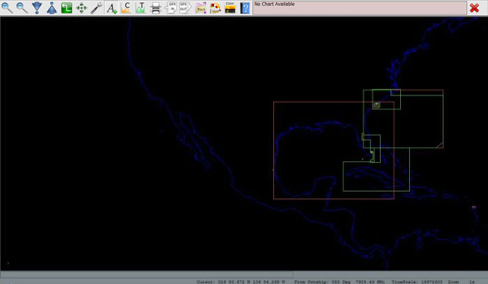
Return to topLet's get familiar with the Tool Bar.
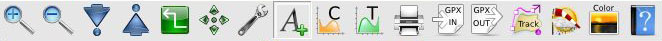
The OpenCPN tool bar.
The Icons from left to right:
ZOOM IN and ZOOM OUT - Magnifying GlassThese change the scale (size on your screen) of the chart you are working with. This allows you to see more details. OpenCPN now supports the use of the scroll wheel to accomplish this.
New in 1.3.6 is the overzoom warning feature which indicates a zoom greater than 4x..SCALE IN and SCALE OUTThese buttons will allow you to change the scale of chart you are using.
If a larger scale chart (large scale = greater detail in a smaller area) is available for the location of you mouse pointer will see more than one segmented bar in the lower left hand corner of the chart window. The segmented color bars in the Status Bar -BLUE for Raster Green For ENC's, Brown/Yellow for CM93 charts – The current chart displays as a lighter shade of its color.
When you hover the mouse pointer over the bar a thumbnail of the chart will appear under the SCALE IN/OUT icons. By clicking on the appropriate bar, or using the appropriate HOT KEYS, you will switch to the chart shown in the thumbnail. This feature is especially useful if you wish to view ECN or a Raster chart of the same area.CREATE NEW ROUTE.Click it. Using the cursor keys navigate to the appropriate chart. Left-Clicking sets a waypoint – Right-Click displays the route context menu.
If creating a route which extends off the currently displayed chart, move the route cursor into the desired area, Right-Click and select 'MAX DETAIL HERE' or 'Scale Out'. This will give you a chart showing the area under your mouse pointer without ending the route. Continue creating the route, using Right-Click drop-down menu zoom wheel or courser keys as necessary change chart, scale and/or zoom or to move the chart under your cursor. Practice to see which combination and methods work best for you.
Activate Route. Turns red - deactivated routes are blue
The current version of OpenCPN has no provision to hide multiple routes so all your routes will show on the chart all the time.
HACK: To keep the chart clear of useful but un-needed routes follow these steps:
- Create your route.
- 'Export to GPX' with an descriptive file name and save it is a created folder called GPX_Routes.
- Delete the route from the chart.
- When needed, simply use the 'Import GPX' to re-load the route file.
AUTO FOLLOWClick on this to center the chart display on your current GPS location and engage Auto Follow (sometime called 'Cruise Mode'), for navigation.
TOOL BOX - a.k.a. OpenCPN program settingsSettings – Selections are self explanatory with this exception:
Automatic Anchor MarkAutomatic Anchor Mark drops an anchor marker on the chart provided the following conditions are met:
- In "Cruising" mode, meaning that speed has at some point exceeded 3.0 kts.
- Current speed is less than 0.5
- Opencpn has been up at least 30 minutes
- And, opencpn is going down now by normal exit.
- And, there is no "Anchorage" waypoint within 0.25 NM of current GPS location
If these conditions are all true, OpenCPN will drop a waypoint at the current location, with the name - "Anchorage created on [Date Stamp]".
Thus waypoints are automatically created for known good anchorages as you shut down the computer. The 0.25 NM condition prevents clogging up frequently visited anchorages with closely spaced waypoints. The other conditions help to prevent spurious waypoints.
Charts:Set and/or remove your chart directories
Vector Charts: - ENC Chart Settings{ to be expanded }
AIS - Automatic Identification System (AIS) settings and preferencesThe Automatic Identification System (AIS) is a short range coastal tracking system used on ships and by Vessel Traffic Services (VTS) for identifying and locating vessels by electronically exchanging data with other nearby ships and VTS stations. Information such as unique identification, position, course, and speed can be displayed on a screen or an ECDIS. AIS is intended to assist the vessel's watch-standing officers and allow maritime authorities to track and monitor vessel movements, and integrates a standardized VHF transceiver system such as a LORAN-C or Global Positioning System receiver, with other electronic navigation sensors, such as a gyrocompass or rate of turn indicator. [AIS description courtesy: www.wikipedia.org].
OpenCPN's AIS function makes it is easy to interrogate targets, see other vessel's courses etc. It will calculate and display CPA and TCPA.
The following is a list of colours and shapes of AIS targets:
FONTSConsole - the font used in the navigation info window, displayed when a route is activated.Marks - the font properties used for waypoint marks.
ETC - additional settingsGPX - turns the GPX icons in the toolbar on and off.Radar Rings - display on/off options, number of rings to display, distance between rings and nautical miles/kilometers settings.Waypoint locking -toggles the lock/unlock of waypoints.GUI Options - enable/disable middle mouse wheel Zoom-to-cursor option.Show ENC Text- Click to display S-57 text on your ENC'sNote: This may not appear to work if you have “Show Important Text Only” selected in the 'Settings/Vector Charts' tab. This setting has no function on Raster Charts.
Show CurrentsTo show or hide current velocity and direction arrows. Click the base of the current arrow to display data for that location.
Show TidesShows Tide Stations on chart. Right Click the 'T' icon to display tide information for that location. Close the box to hide the information.Hint: The tide icon, 'T', remains the same size regardless of chart scale. Zoom out and the icons will be easier to find.
PrinterMakes a remarkably fine cup of decaffeinated coffee and a toasted bacon sandwich, just the thing for a chilly night watch.If refreshments are not forthcoming, check the printer for a print of the current chart view.
GPX ImportOpenCPN supports the import and export of GPX (GPS eXchange) files. This format contains one of two types of information, TRACKS or ROUTES.
- Tracks: are a record of a journey made. It will contain the minimum of a latitude and longitude of a single waypoint. It usually contains additional information such as mark number, timestamp. etc.
- Routes: are a plan of a journey to be made It must contains a latitude and longitude of at least one waypoint; It may also include other information such as a mark name.
To import a previous track or route, click the GFX-in button and use the file browser to locate the desired file. It will auto load and display in OpenCPN. Loaded GPX can be manipulated within OpenCPN: For instance, a saved outbound track can be used as return route - right-click on the track and select "Reverse Route". Similarly, addition waypoints may be added or removed from the track.
If the GPX Icons are not visible in the toolbar, they can be activated from Settings->Etc.->Show GFX Icons.
GPX ExportGPX Export saves all current routes and tracks into a single file a directory on your hard disc.Single routes/tracks can be saved to an individual file by right clicking on the line and selecting "export". A file browser will open for yo to save to a directory of your choice.
TrackBy default, the track icon is displayed in the toolbar: If it's not visible, tick the checkbox in Tools->Etc.->Show track Icon. Addition settings control the track points by time interval (in seconds) or in nautical mile (resolution 0.00)
Tracking is on upon startup by default. Clicking the icon toggles between enabled and disabled.
Right clicking on a track will generate a popup:
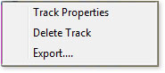• Track Properties:• Delete Track: Removes the current track.• Export... saves the track as a GFX file. This can be re-imported later using GPX IN.The tracking function does not use course or speed. It uses only the Lat and Lon position data report from the GPS. If you decrease the logging frequency you will get "straighter" lines. Ensure your GPS is set to produce at least three digits of resolution.
GRIBGRIB (GRIdded Binary) is a mathematically concise data format commonly used in meteorology to store historical and forecast weather data. It is standardized by the World Meteorological Organization's Commission for Basic Systems, known under number GRIB FM 92-IX, described in WMO Manual on Codes No.306. GRIB superseded the Aeronautical Data Format (ADF).
In short, it displays weather information on OpenCPN.
The icon enables and disables the function. If the icon is not visible, it can be displayed from Tools -> GRIB -> Show GRIB Icon. When first used, a pop-up window requests the path to the GRIB information. Any GRIB filename which is grayed out indicates no weather information or data which is unreadable.
OpenCPN currently supports and displays wind barbs and pressure isobars at sea level.
GRIB data available is:• Wind speed (in Knots).• Wind Direction.• Pressure (mBars).• Significant wave height (in meters).Please keep in mind OpenCPN is primarily an ECN reader and not a GRIB viewer: GRIBs in OpenCPN are intended to be a convenience for passage planning. Other programs will provide better analysis and display of complete GRIB data models.
Screen BrightnessClicking this icon will cycle through preset screen/color/brightness settings for day/dusk/night viewing.
Help Files and About OpenCPN information.The About OpenCPN box. On the first of three tabs you will find the version number and copyright info. The middle tab shows the names and email addresses of the authors of this work and the third tab displays the GNU General Public License.
This document describes the conditions under which this application is licensed to you, the user.
The Chart Data WindowThis window provide information on he location of the chart, the name of the area and the chart year.
Its background colour indicates the following.No GPS connected or signal lost.GPS connected and signal good.Georeferencing is deemed unsuitable for navigation.The latter "unsafe" warning is rare, usually limited to very old BSB V1 charts. Use any ECN information with extreme caution.
The Big Red 'X'Hit this button or the one above it to shut down OpenCPN. You can also use the Hot key combination [Ctrl] + [Q] to exit the program.
The Bottom Control BarThe bottom of the screen is reserved for live navigation and other data.
The first line provides a hover link to loaded chart previews. There are four colours:.Vector Charts- not selected.Vector Charts - selected .Raster Charts - not selected.Raster Chart - selected.The second line provides real time data from GPS: The information available is:.• Ship's Position.• SOG (Speed over Ground)• COG (Course over Ground)• Cursor(Lon/Lat of cursor)• From Own Ship - (Degrees and distance in NM)• True Scale.• Zoom
Navigating with OpenCPN
Return to topLoad Your Charts
Use the top window pane to locate and highlight the directories containing your charts. When you have a chart directory highlighted, chose "Add Selection". The directory you selected will then appear in the bottom pane of the window and be added to the OpenCPN chart database.
Repeat this for all the chart directories you wish OpenCPN to be able to display.
When you have finished selecting and adding chart directories, choose "OK".
A window with a progress bar will open showing that OpenCPN is recognizing your selections.
NOTE: OpenCPN can share chart directories with any other installed chart navigation system. There is no need to make a separate directory for OpenCPN charts.
Return to topGet your GPS working
Open the Tool Box.
In the Settings tab, select the NMEA Data Source from the choices in shown in the drop-down box, and choose the port to which your GPS is connected. When the correct port is selected, the Chart information panel changes from pink to green.
If you are using a standard serial port, then choose the proper physical port number to match. If, on the other hand, you are using a USB GPS, then you will select the virtual serial port which was created by your GPS device driver. You may need to try several selections to find the correct port.
Hint: For XP/Vista: Using the Device Manager, look for a serial port which appears and disappears dynamically as you plug and unplug the USB GPS cable. This is your virtual GPS serial port.
When the properly configured GPS is connected, powered up, and recognized, then OpenCPN will show a pale green background in the upper right window of the tool bar. This bar also displays the current chart's PATH, File name as well as its Chart Name and Edition Year.
If no GPS is present or recognized, the chart identification window will have a pale red, or plum colored background.
NOTE: OpenCPN automatically configures baud rate, bits, parity, etc. These do not need to be separately specified.
Return to topConnecting Your Auto Pilot
OpenCPN may be interfaced to any NMEA compatible autopilot which recognizes the RMB NMEA sentence. The serial port may be selected in the Tool Box dialog.
Return to topUsing Routes
One of the key features of OpenCPN is routes: The program allows you to create routes, gain useful planning data and to follow the route underway.
Creating Routes
Using RoutesTo use a route, either creating a new route, or load a previously saved track or route from file. Right clicking anywhere on the route line will generate a pop-up which contains the following: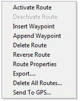
• Activate Route - turns the autopilot/route tracking on.• Deactivate Route - turns the autopilot/route tracking off.• Insert Waypoint - adds waypoint into route at cursor.• Append Waypoint - adds waypoint at end of route.• Delete Route - remove this route from OpenCPN.• Reverse Route - reverses start and destinations, A -> B to B -> A. Useful for return leg journeys.• Route Properties - useful editor and summary of all waypoints, distances and ETA.• Export... - Saves the current route as GFX file.• Delete all routes - deletes all routes.• Send to GPS: Exports the current route and its waypoints to compatible GPS device.Activate RoutesWhen the 'Activate Route' is clicked, a new display is opened top right. Clicking the ''Leg/Route' button toggles between"This Leg " and "Route".
The "This Leg" display shows the following data: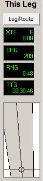
• XTE: {abbreviation to be confirmed}• BRG: {abbreviation to be confirmed}• RNG: {abbreviation to be confirmed}• TTG: {abbreviation to be confirmed}
The track chart below the readout provides a graphical representation of the ship's true position relative to the course.
The "Route" display shows the following data:• ETA: The expected time of arrival at destination• BRG: {abbreviation to be confirmed}• RNG: {abbreviation to be confirmed}• TTG: {abbreviation to be confirmed}
The track chart display is the same as :This Leg".
WaypointsWaypoints can be edited by right clicking on them. This generates a popup with the following options.
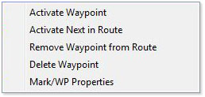
Please Note: 'Activate Waypoint' and 'Activate Next in Route' are selectable only when 'Activate Route' is turned on: At all other times, they are grayed out.
Activate WaypointWhen the 'Activate Route' is clicked, the first route waypoint will be highlighted and flashing. This priority is changes with 'Activate (this) Waypoint', moving the active status to this mark: It then becomes highlighted and flashing.
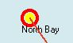
Activate Next in RouteThis advances the highlighted waypoint to the next in the route.
Remove Waypoint from RouteDeletes the selected waypoint from the current route.
Remove Waypoint from RouteDeletes the selected waypoint from the current route, BUT NOT THE CHART.
Mark/WP PropertiesThis option provides details and editor for the waypoint.
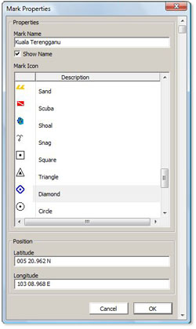
Options:• Mark Name - any alpha numeric text label.• Show Name - check box which show/hides the waypoint name.• Mark Icon - The waypoint can have anyone of a number of graphical icon marks, each representing a specific function/place type. Useful for identifying anchorages, buoy type, fuel stop, etc.• Latitude - Latitude of the mark: Direct entry of position will move the mark to the new location.• Longitude - Longitude of the mark: Direct entry of position will move the mark to the new location.• Cancel - aborts any changes.• OK - updates the changes to the chart.
Route Properties.The route properties box contains both editing and data display functions.
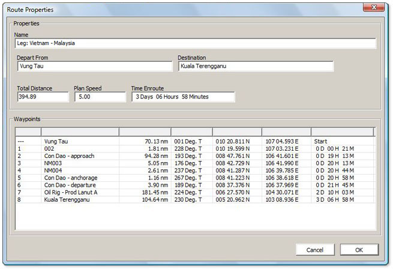
• Name: Editable - the alphanumeric title of the route.• Depart From: Editable - the alphanumeric title of the departure point.• Destination: Editable - the alphanumeric title of the dedestination.• Total Distance: Not editable - total distance in nautical miles.• Plan Speed: Editable - Hulls speed in Knots.• Time Enroute: Not editable - Estimated passage time based on distance x hulls speed.• Waypoints: Not editable - list of waypoints. The data listes is:• Waypoint ID - by number.• Waypoint Name - by number or name set in Waypoint properties.• Distance: - the distance between waypoints - the distance shown for waypoint 1 is the distance from Own Ship's position and waypoint 1: It is not added to the total route distance.• Bearing - the Bearing in Degrees True from waypoint X to Waypoint X + 1.• Longitude - position of the mark.• Latitude - position of the mark.• Elapsed Time.
Return to topGeneral Chart Queries
Clicking anywhere on the OpenCPN chart opens a pop-up box with four useful functions:
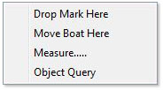
• Drop Mark Here: This places a new mark on the Chart. This can be edited as waypoints above.• Move Boat Here: This moves the boat to the current cursor position.• Measure: This launches the Measure tool. [see below]• Object Query: Right-click any object then select Object Query, This launches the Object Properties Box
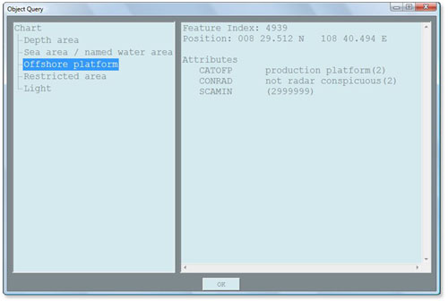
By clicking on any category in the left panel, details will be displayed in the right panel.
Return to topThe Measure Tool
The measure tool is accessed from right-clicking on the chart and selecting the measure option.
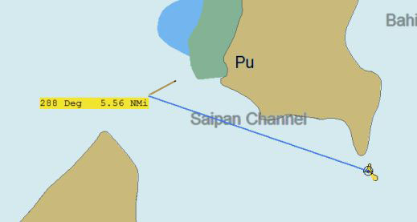
By left clicking on the chart then moving the cursor to a new position, a real-time display is given of bearing (degrees) and range (nautical miles). To cancel the measure tool, right click the chart and select 'measure off...'.
Return to topOverzoom
A new feature in 1.3.6 is the 'Overzoom' indicator. When zooming in on chart beyond 4x, the text 'Overzoom' appears top left, to remind users safe accuracy of the chart may have been exceeded.

Return to topHot Keys
The following hot key shortcuts are defined:
- F1: Not currently used.
- F2: Toggles Auto-Follow On and Off
- F3: Show ENC Text.
- F4: Activates the measuring tool.
- F5-7: Not currently used.
- F8: Auto Follow On
- F9: Auto Follow Off
- F10: Select Smaller Scale Chart (Scale In).
- F11: Select larger Scale Chart (Scale Out).
- F12: Toggle Hide/Show Chart outlines.
- Arrow Keys: Move the chart within the screen view
- Ctrl + L-Arrow: Smaller Scale Chart (Scale In) - [F10]
- Ctrl + R-Arrow: Larger Scale Chart (Scale Out) - [F11]
- Ctrl + 1: Normal brightness
- Ctrl + 2: Dusk brightness
- Ctrl + 3: Night brightness
- Ctrl + Z: Zoom In
- Ctrl + X or - : Zoom out
- Ctrl + O: Show/Hide Chart outlines [F12]
- Ctrl + S: Show/Hide ENC test [F3]
- Ctrl + M: Drop marker at current cursor position.
- Ctrl + Q: Quits openCPN
- Ctrl + spacebar: Man Over Board, sets MOB Marker at current GPS position.
• What are all those 'U' things all over my chart?
The feature being rendered is S57 Text relating to 'M_QUAL'.
This is a meta-object describing the quality of data shown. The Attribute of interest is CATZOC, or "Category of Zone of Confidence". The value on most US ENC's is "6", or "un-assessed". Thus, the 'U'.
You can turn this symbol off in OpenCPN by de-selecting the box next to M_QUAL in 'Tool Box' / 'Vector Charts' tab 'Mariners Standard' selection list box.
To learn the acronyms used in this application search the S57 'Object and Attribute' catalog: http://www.s-57.com/
• I have routes and way points in SeaClear and I would like to import them into OpenCPN. Can I do it?
Yes. I had originally created and maintained all my routes and waypoints in SeaClear. I exported them, loaded them into GPSUtility (for Windows) and saved them as text files.
To import into Opencpn, I opened all my text files (routes and waypoints) with GPSUtility, saved that out as one big gpx file, and loaded it into OpenCPN. Works like a champ.
I've edited them and saved them back out as gpx files with no trouble. Individual routes can be edited and saved in appropriately named .GPX files.
• Whenever I try to open a particular chart, OpenCPN crashes. What's going on?
Chances are the chart file is corrupted. Note the name and number of the suspect chart and replace it with a fresh download.
NOTE: A list of the charts with their names and file names can be found in the README.TEXT that accompanies the charts downloaded from NOOA.
• OpenCPN and Great Circle Navigation
Raster charts display bearings and headings as straight, measurable lines on the chart. Similarly, Vector ENC's are rendered as Mercator projections in OpenCPN and most other ECS's for the same reason.
For typical coastal navigation errors which occur using rhumb line instead of great circle calculations are small for the distances usually covered by one chart.
Great circle navigation is more useful when one wants to travel the minimum possible distance between two widely spaced points on the globe. I cannot personally imagine using one chart for one electronically navigated leg across an entire ocean. However, if I crossed an ocean with openCPN , I would lay out a route with great circle points manually plotted every couple of degrees, and engage the autopilot. Maybe the weather would cooperate.....
Fair winds and following seas -
Dave and the OpenCPN Team
Return to topTable of Contents
| Table of Contents | ||
To be completed |
||